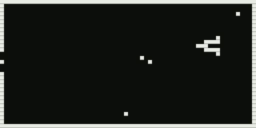
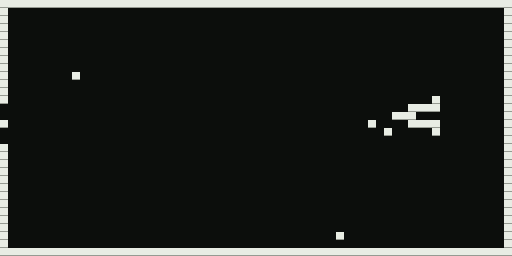

Meteor Storm
D. Toon · DREAMER no. 17 (1982-01) 2K RAM



Your converters can power either the engines or the shields, so you must dodge meteors while moving and stop to raise the shields when you cannot. Dock exactly with the mother ship on the left to finish. Two full-screen pictures show the crash and docking messages.
Keys
1 left, 2 up, 0 down.
Files
| File | Version | Load | Run |
|---|---|---|---|
| Meteor Storm.d68 | main | 0080-067F | C000 |
Listing as transcribed (with notes): meteor_storm.txt
Source
DREAMER no. 17 on archive.org (PDF page 34). Author: D. Toon.
Corrections applied
- 0080-00FF and 0200-027F taken from the replacement page in issue 18 (p.4), because the page in issue 17 was misprinted.
Open doubts
- 0100-01FF not printed (zeros); 04E7 = 01 is an isolated pixel, as printed.
- after about 10 s holding 1 (left) the screen goes blank; to be checked on hardware